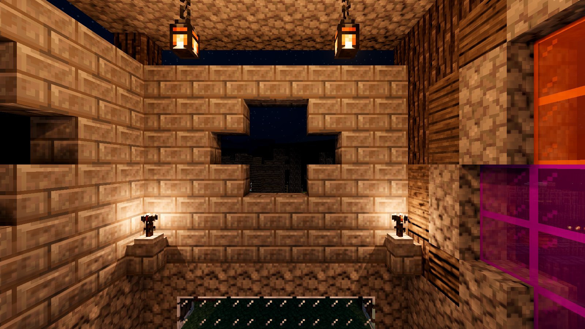
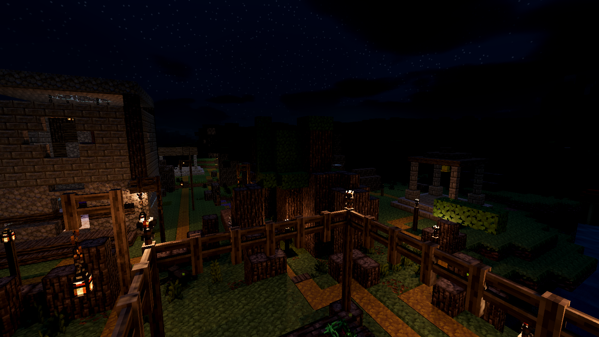

These comparisons test room illumination, keeping the lanterns' visible glow enabled. Findings and limitations.
The torches remain active in both frames. Camera, exposure and materials are fixed.

16 slots admits none of the four ceiling lanterns; 32 admits all four. The 32-slot test is not a committed default. Selection and fallback remain unresolved.
